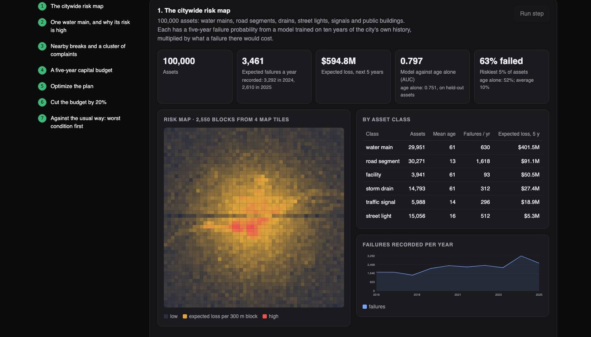
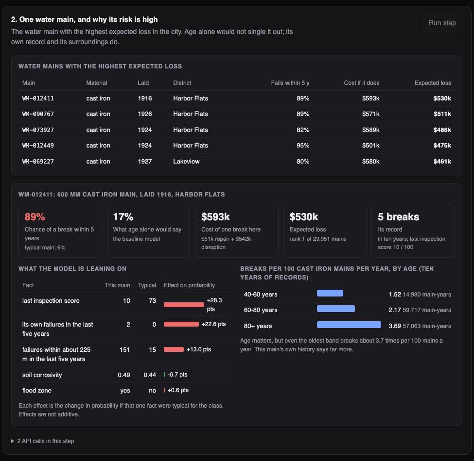
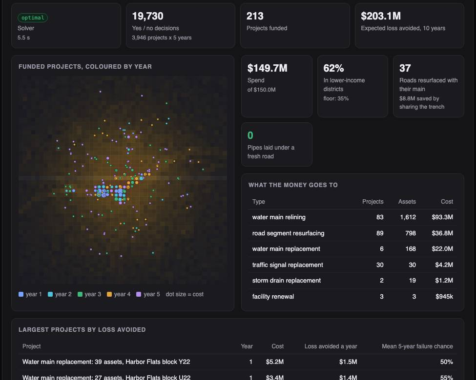

Python · Risk and optimization · 2026-10
100,000 Pipes, Roads and Drains, and Money to Fix One in Ten. Which Ones?
A planning system for a city's infrastructure. On an invented city it predicts which assets will fail within five years, prices each failure, and picks which projects to fund each year. With the same $150M, its plan avoided 3.7 times the expected loss of fixing whatever looks worst first. Checked against five simulated future years the model never saw.

Built from a written blueprint as one vertical slice, on a synthetic city: every asset, failure, inspection and resident report is generated, and the cost tables are invented. That is what lets the forecasts be checked against a simulated future. Two caveats that matter: a simple ranking by benefit per dollar gets within about 5% of the optimizer, and the plan counts benefits over ten years only, which favours cheap fixes. Not built: reading defects from photos, PostGIS, real GIS file formats, sensor feeds, Kafka, Terraform, single sign-on.
01 — The problem
A city owns far more ageing infrastructure than it can afford to renew. Riverton, the invented city here, has 100,000 water mains, road segments, drains, lights, signals and buildings, a backlog of $1.6 billion, and $30 million a year. The usual rule is to fix what looks worst. But the pipe in the worst condition is not always the one most likely to burst, and the one most likely to burst is not always the one that matters most when it does. Can the city's own records say which assets will fail, what each failure would cost, and which projects to fund first?
Blueprint 10 of ten in an enterprise build book, built as the demo scenario end to end.
02 — What I built
A Python service on PostgreSQL with a background worker and a web page, started by one docker compose up.
- Failure model: the chance each asset fails within five years, learned from ten years of the city's failures and inspections.
- Risk: that chance times what a failure there would cost (repair plus disruption).
- Evidence: for any asset, which facts push its risk up, its own history, and what is happening around it.
- Complaint clusters: places where residents' reports of the same problem are piling up.
- Risk map: served as standard map tiles.
- Capital plan: which projects to fund in which year under a budget, with a rule for spending fairly and a rule against digging up a new road.
03 — How it was built
- 01
Learn from the past without peeking
The model is taught on the city as it stood at the start of 2021: what was known then (age, material, soil, the last five years of failures and inspections) and what happened next (did it fail in 2021 to 2025). A test changes everything after 2021 and checks that not one input moves. To score today, the same recipe is applied to the latest five years.
t = year - world.YEARS[0] window = slice(max(0, t - 5), t) # only the five years before the snapshot - 02
Always keep the simple answer beside it
The baseline is what an age-based replacement policy assumes: failure rate by how old an asset is against its expected life. It is stored next to every score. For the riskiest main in the city, the model says 89% and age alone says 17%.
edges = np.quantile(X[m, 2], np.linspace(0, 1, 11)[1:-1]) self.tables[c] = (edges, [y[m][b == k].mean() for k in range(10)]) - 03
Say why
For one asset, each fact is swapped for what is typical of its class and the chance is recomputed. The difference is that fact's effect. For the riskiest main: an inspection score of 10 out of 100 (+28 points), two of its own breaks in five years (+23), and 151 failures within about 225 metres (+13). These are not causes, only what the model is leaning on.
alt = row.copy() alt[j] = typical[j] effect = p - model.predict_proba(alt[None])[0, 1] - 04
Choose projects, not assets
Risky assets are bundled by block into projects. A solver then makes 19,730 yes or no decisions (each project, each year): avoid the most expected loss, stay inside each year's budget, spend at least 35% in lower-income districts, and never lay a pipe under a road that was just resurfaced. If the road and the pipe are done in the same year, they share a trench and the resurfacing costs 30% less.
m.Add(z <= x[(r, y)]) m.Add(z <= sum(x[(w, y)] for w in by_road[r])) # road and main in the same year - 05
Check the plan against the future
The simulator knows the true failure rates the model had to guess, and it can run five more years. So each plan is scored twice: by the model's numbers, and by the truth. The optimized plan's advantage held up: 1.43 dollars of loss avoided per dollar by the truth, against 0.36 for worst-first.
h = world.hazard(sub, world.TODAY.year - 1 + t, prior[g]) total += float((h * (repair[g] + service[g])).sum()) * p["effectiveness"]
04 — Results
The model. Of the 5% of assets it ranked riskiest today, 70.5% went on to fail in the simulated next five years. Ranking by age alone: 56.8%. Across all assets: 12.2%. It expected 3,461 failures a year citywide; the simulator then produced 3,535.

The plan. $150M over five years, against a backlog of $1.6B. Benefits counted over ten years.
| Way of choosing | Loss avoided | Per dollar | Per dollar, by the simulator's truth |
|---|---|---|---|
| Worst condition first | $55M | 0.37 | 0.36 |
| Best ratio first (simple ranking) | $193M | 1.30 | 1.36 |
| Optimized | $203M | 1.36 | 1.43 |

What that table really says. Nearly all the gain comes from weighing what a failure costs at all. A simple ranking gets within about 5% of the solver. What the solver adds is coordination: 37 roads resurfaced together with the pipe beneath them ($8.8M saved) and no new road dug up, where the simple ranking dug up two.
A 20% budget cut. 64 projects drop out. Over ten years that means about 658 more failures and $28M more expected loss, for $30M saved. On these numbers the cut nearly pays for itself, and that is a warning about the numbers: pipes last far longer than the ten years counted here.
Checks. 28 tests, including: no input using anything after the snapshot date, the four map tiles adding up to exactly the whole city, a good inspection lowering a risk score and a bad one raising it, an import with one bad record being refused whole, and one city unable to see another's assets or use its model.
05 — What I'd do next
- Count a project's benefit over the asset's whole life, with failure rates that keep rising, in place of a fixed ten-year window.
- Try it on a real utility's break records, where the data is patchier and the model's edge over age is unknown.
- Read road and sidewalk defects from inspection photos, which the blueprint asks for and this build skips.